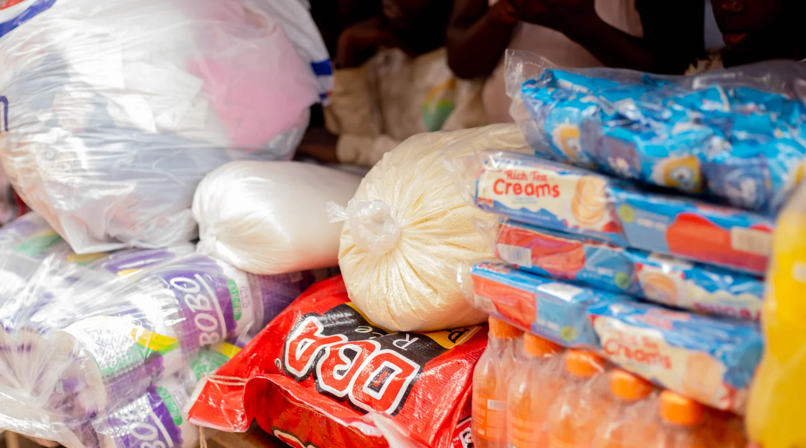
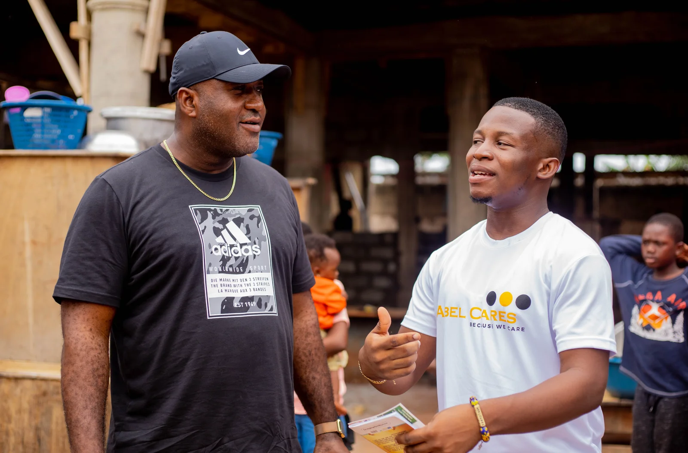
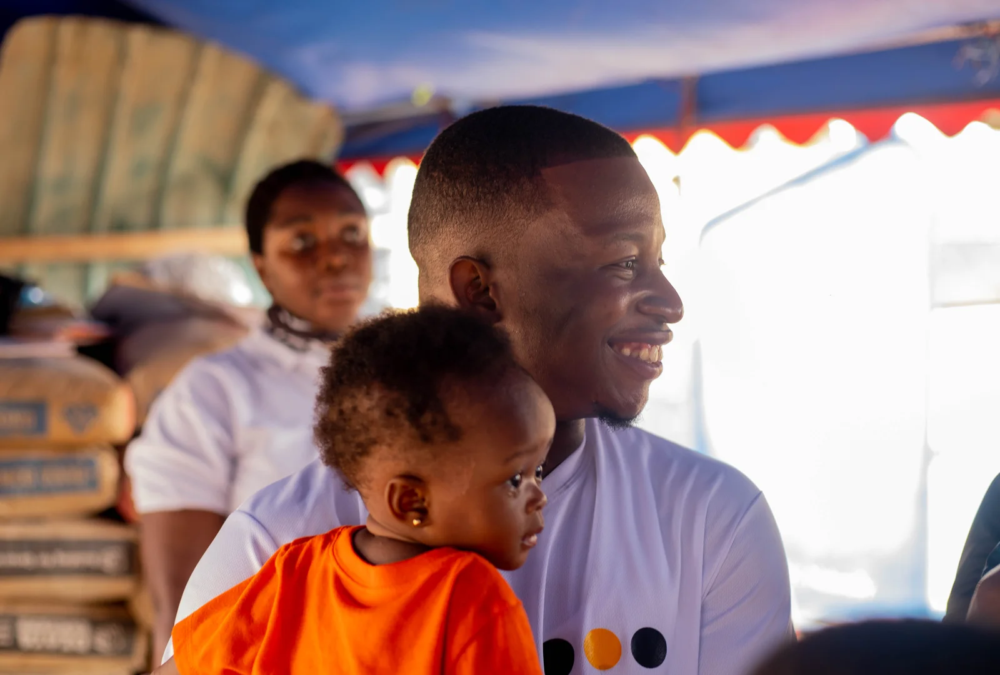

Measurable Outcomes
What we've done so far.
We empower individuals, communities, and institutions through programs that address learning, mental well-being, youth empowerment, and community resilience.

Documented Reach
1,500
Young people mentored through EmpowerTalks Africa
Foundational youth mentorship, speaking events, and community engagement conducted across outreach sessions.
Program Milestones
Achievements & milestones.
Examples of program milestones documented across Ghana:
- Successful school outreach programs across Ghana
- Mental health advocacy and training in multiple communities
- Youth mentorship for 1,500 young people through EmpowerTalks Africa
- Leadership in Autism & SEN Show Africa
- Digital futures programs and awareness initiatives
- Mental health documentary and policy advocacy campaigns


